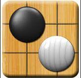
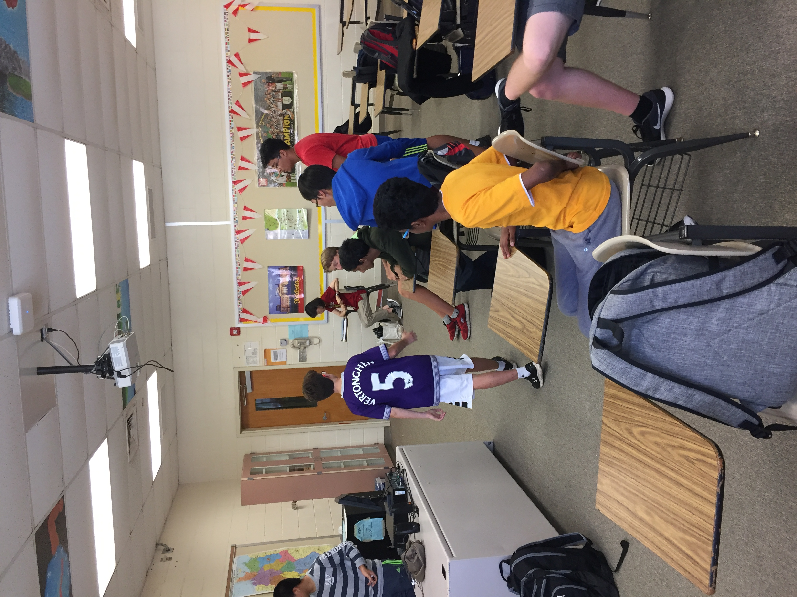

High School North Go Club
and the world of G0 
Our Club and Our Goals

The High School North Go Club is a club where students come together to learn and share their love of Go. We meet after-school on Wednesdays and Thursdays from 3 - 4 PM. We will play the wonderful games of Go and Gokamu during these meetings. We will also have reviews of games and show you the dos and don’ts of Go. There will be strategical analysis and group discussions of a match.
Everyone is welcome to join the HSN Go Club, regardless of your rank / previous experience.
What is Go?

Go / Weiqi / Baduk / Igo is a traditional strategy board game of territory that was invented in ancient China and formalized in Japan. The professional board has a 19 x 19 grid of black lines. The game pieces, called stones, are placed on the line intersections. The goal is to acquire territory by surrounding parts of the board with your stones. Enemy stones can be captured by surrounding them with your stones. A game will end when both players pass (skip their turns) or when one resigns. Points are counted up when the game ends. Territory and / or captured stones give you points, and the player with the most points wins.
Rules of Go
The game of Go starts off with an empty board. There are various board sizes, but the common ones are 19x19, 13x13, and 9x9, with professional games being played on the 19x19 board. Two players take turns placing game pieces, known as stones, on the board. Each player has an infinite supply of stones. One player has white stones, an
d the other player has black stones. Stones are placed on the intersection of two lines. The dots (called star points) on the board mark the handicap points (handicap stones are only placed when the difference in rank between the two players is four or greater). Depending on the difference in rank between the two players, the lower rank player may start the game with some of his stones already on the board at the handicap points.
Black goes first. In exchange for going first, black gives white a designated number of points (this is called komi). As Go is a territory game, claiming the most territory with the least number of stones is ideal. A territory is considered “alive” once it has two living eyes (an eye is a single living space). As such, claiming the co
rners is the most efficient because you would only need to surround 2 sides. Claiming an edge requires surrounding 3 sides, and claiming the center would require surrounding all 4 sides.
ALPHAGO
AlphaGo Vs. Lee Sedol

The ultimate battle between humans and artificial intelligence. Below, we have posted the entirety of games 4 and 5 and their fifteen minute summaries. These games were arguably the most intense and interesting games of the match, so we highly recommend watching at least one of the videos. We guarantee that it will enhance your knowledge about Go.
We have posted the entirety of games 4 and 5. We have also posted the 15 minute summaries for both games (since I highly doubt any of you would want to watch 6 hours of Go in one sitting). Michael Redmond, 9 dan professional, is the commentator in the videos and it is a great place for beginners to start. You should study the game yourself if you're really interested, but the Redmond does an excellent job explaining the game.


More ALPHAGO
AlphaGo Vs. Ke Jie

After months of rumors and insistence from Chinese pros, AlphaGo finally played official games with Ke Jie, who is regarded as the world's current best player.
AlphaGo came back stronger than before, partially because it also played many unofficial games online. Ke Jie said that the future is AI, and he was swept. Lee Sedol has said that he may be the only person to ever beat AlphaGo. As of now, that is the case, as AlphaGo has retired from professional Go. Unless Google open sources the program, Lee Sedol will be the only person to beat AlphaGo.

"The rules of Go are so elegant, organic, and rigorously logical that if intelligent life forms exist elsewhere in the universe, they almost certainly play Go" - Edward Laskar
Board Members
-
Eric Liu
Co-President/Founder -
 Charles Tian
Charles Tian
Co-President -
 Daniel Niedfeldt
Daniel Niedfeldt
Public Relations/Webmaster -
 William Lin
William Lin
Secretary -
Raymond Chang
Treasurer
Information
-
Email: hsngoclub@gmail.com
-
Room Number: A211
Important Videos
Photos
